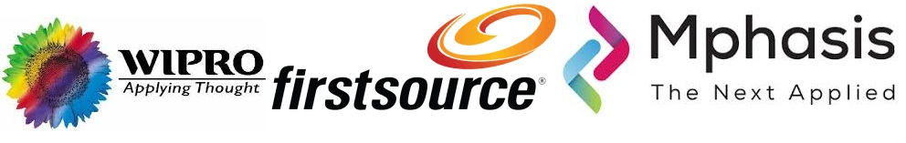

About Me
CAREER OBJECTIVE:
Overall 8+ years IT Industry experience, looking for a Cloud Engineer position to utilize my technical knowledge on Amazon Web Services.
PROFESSIONAL SUMMARY:
• Migrating and implementation of multiple applications and databases from on premise to cloud using SMS, DBMS.
• Creating and Implementation of the Site-to-Site VPN connections between On-Premise and AWS.
• Migration of on-premise DNS servers to route 53.
• Proficient with AWS services including EC2, VPC, IAM, S3, Athena, Cloud Front, CloudWatch, GLACIER, SNS, SQS, EBS, RDS, RedShift, ElasticSearch,
Route53, Auto Scaling, Network, Application & Classic Load Balancer, Elastic Cache, Couldformation, Beanstalk, CloudTrail etc.
• Writing the template to create a collection of related AWS resources and provision them in an orderly and predictable fashion using
CloudFormation and Terraform.
• Experience with Jenkins as Continuous Integration / Continuous Deployment Tool.
TOOLS AND TECHNOLOGIES:
Cloud Services - AWS - Amazon Web Service.
DevOps - Git / GitHub / Jenkins / Ansible / Docker.
Operating System - Windows Family / Linux RHEL, Ubuntu, CentOS.
Web Servers - IIS / Tomcat / Web logic.
Web Design - HTML, CSS.
Monitoring Tolls - ControlUp and CloudWatch.
Virtualization - Vmware vSphere.
Scripts - Python / Bash / JSON / YAML / PowerShell.
PROFESSIONAL EXPERIENCE:
Mphasis Limited. From : July 2015 to Till Date
Client: Bristol-Myers Squibb (BMS)
Designation: Lead Infra Engineer
Present Responsibilities:
• Experienced in creating multiple VPC’s and public, private subnets as per requirement.
• Created and configured elastic load balancers and auto scaling groups to distribute the traffic and to have a cost efficient, fault tolerant and
highly available environment.
• Used security groups, network ACL’s, internet gateways and route tables to ensure a secure zone for organization in AWS public cloud.
• Managing Backups of Instances.
• Possess good knowledge in creating and launching EC2 instances using AMI’s of Linux, Ubuntu, RHEL, and Windows and wrote shell scripts to
bootstrap instance.
FirstSource Solutions Limited, Chennai. From : May 2012 to June 2015
Designation: Support Engineer
Responsibilities:
• Installation, configuring and administrating Internet Information services [IIS] 5.1, 6.0, 7, 7.5.
• F5 load balancer configurations and add/remove the servers on F5.
• IIS Servers Administration like troubleshooting & deployment of IIS application, website troubleshooting etc.
• Create and Administrate Multiple Website, FTP site, Application, Virtual directory.
• Configuring SSL certificate in IIS for HTTPS.
WIPRO INFOTECH, Chennai. From : Nov 2010 to May 2012
Designation: Support Engineer
Responsibilities:
• Installation of Windows 7, XP and 2000 Operating systems and software’s.
• Providing Desktop support for 1500 PC’s and other peripherals like Printers, Scanners.
• Providing complete Remote support in resolving all application and software related issues through Remote Tools such as CF1 Tool, DameWare & VNC used for remote administration solutions.
• Understanding the Severity Levels and closing the Calls on priority basis to achieve 100% SLA. Responsible to Generate and circulate Daily/Weekly and Monthly server reports to the appropriate stakeholders.
• Responsible for Windows server Backup and Restoration using Brightstor Enterprise Backup 11.5 Version with HP storage works MSL5000 series DLT library.
• Maintaining an Asset database and updating at regular intervals.
• Tracking asset movements and ensuring software and hardware assets are within control.
• First level support for Client Specific applications (Connectivity and configuration of applications only).
• Support for generic applications like Citrix ICA client, Web Based front-end.
• Coordinate with vendors for Hardware issues.
• Creating the accounts and groups.
• Configuring the printers and resolving printing problems.
Certification:
AWS Certified Solutions Architect – Associate.
Educational Summary:
• Bachelor of Technology (I.T.),Anna Theresa Engineering College, Thirunavalure., T.N. (2008)
• HSC, RK Govt Higher Secondary School, Panruti, Cuddalore, T.N. (2004)
• SSLC, RK Govt Higher Secondary School, Panruti, Cuddalore, T.N. (2002)
Personal Details:
Name : Vijayaragavan C.
Date of Birth : 06-03-1987.
Marital Status : Married.
Nationality : Indian.
Language Known : English and Tamil.
Click to Download Resume
Worked For
